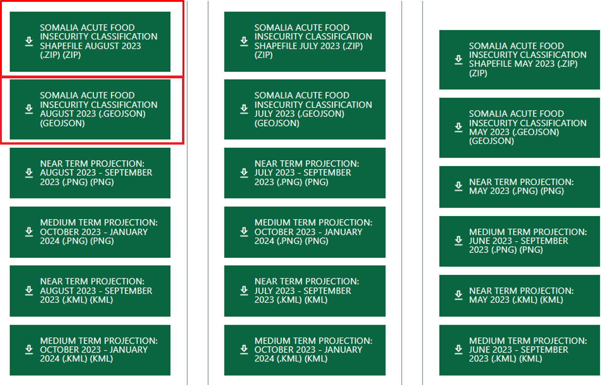
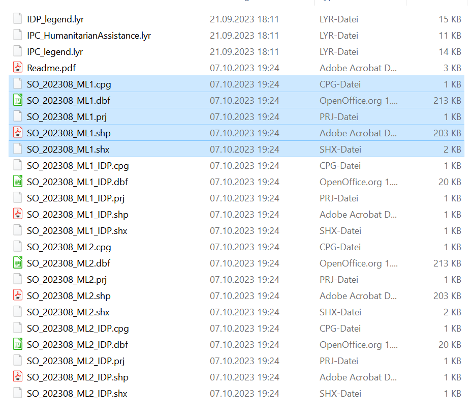
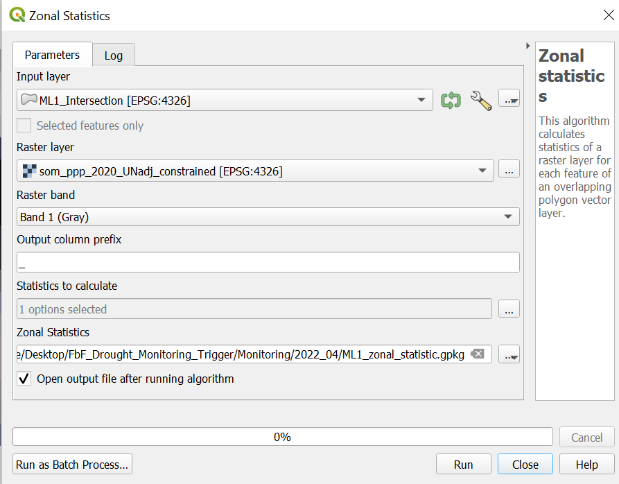
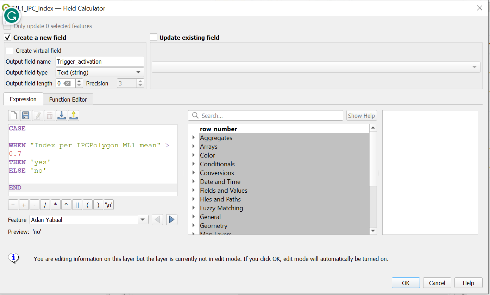
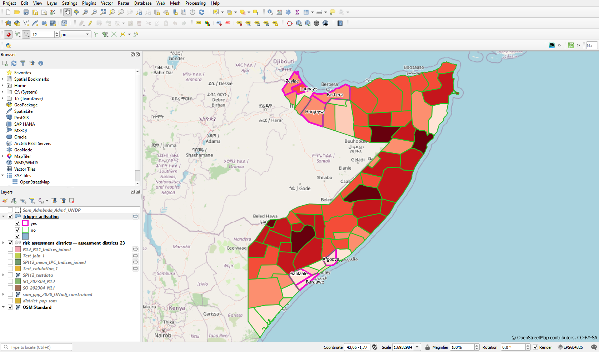
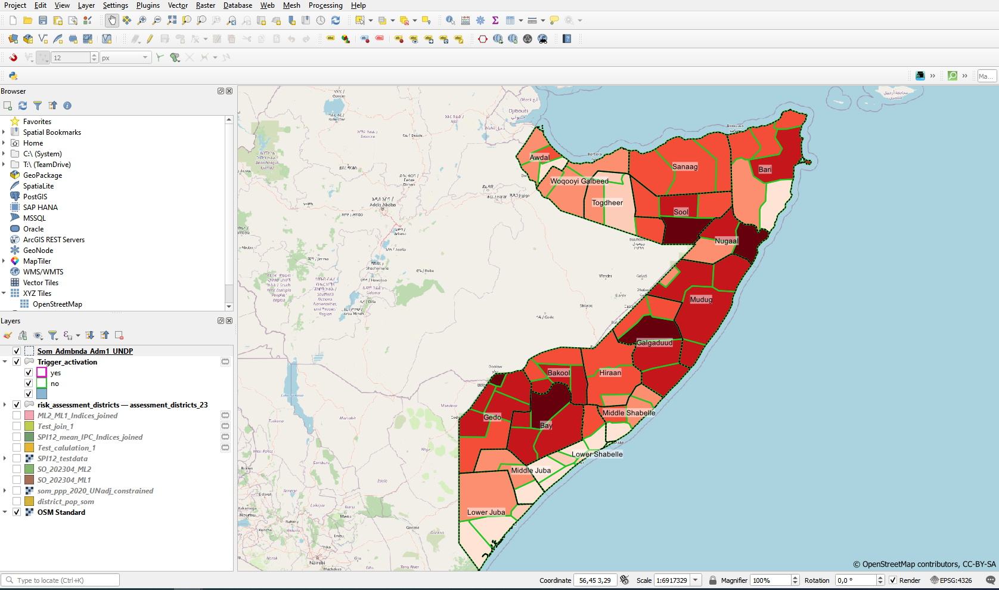
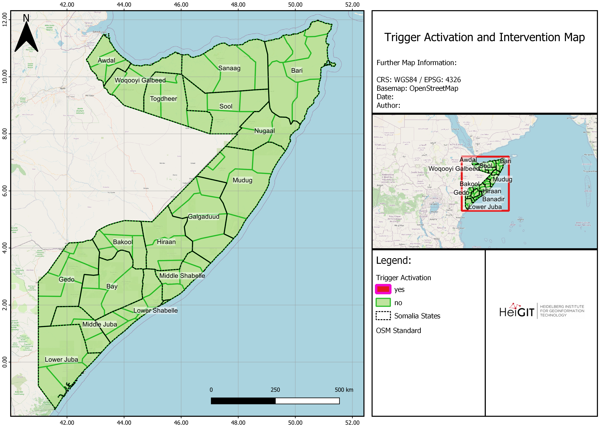

Ejercicio 3: Mapa de activación e intervenciones para acciones anticipatorias#
Características del ejercicio#
Objetivo del ejercicio:
Este ejercicio toma como referencia el proceso de supervisión y activación utilizado por la Sociedad de la Media Luna Roja Somalí (SRCS, por sus siglas en inglés) en el marco de un Protocolo de Acción Temprana contra la sequía.
En este ejercicio, usted construirá una versión simplificada del mecanismo de supervisión y activación para el pilar de proyección de FEWSNET.
Tipo de ejercicio de capacitación:
Este ejercicio puede utilizarse tanto en la capacitación en línea como en la presencial.
Puede realizarse como ejercicio guiado o individualmente a modo de autoestudio.
Estas habilidades son relevantes para:
Duración estimada del ejercicio:
Artículos relevantes en Wiki:
Instrucciones para capacitadores#
Rincón del instructor
Preparar la capacitación
Tómese su tiempo para familiarizarse con el ejercicio y el material proporcionado.
Prepare una pizarra. Puede ser una pizarra blanca física, un rotafolio o una pizarra digital (por ejemplo, una pizarra Miro) donde los participantes puedan añadir sus conclusiones y preguntas.
Antes de comenzar el ejercicio, asegúrese de que todos hayan instalado QGIS y hayan descargado y descomprimido la carpeta de datos.
Consulte ¿Cómo hacer capacitaciones? para obtener consejos generales sobre cómo impartir una capacitación.
Impartir la capacitación
Introducción:
Presente la idea y el objetivo del ejercicio.
Proporcione el enlace de descarga y asegúrese de que todos los participantes hayan descomprimido la carpeta antes de comenzar las tareas.
Guía paso a paso:
Muestre cada paso y explíquelo al menos dos veces y de manera pausada para que todos puedan ver lo que está haciendo y aplicarlo en su propio proyecto de QGIS.
Pregunte con regularidad si alguien necesita ayuda o si todos están siguiendo el ejercicio, para asegurarse de que todos comprenden y realizan los pasos por sí mismos.
Mantenga una actitud abierta y paciente ante cualquier pregunta o problema que pueda surgir. Los participantes están haciendo varias tareas a la vez: prestan atención a sus instrucciones y las aplican en su propio proyecto de QGIS.
Cierre de la sesión:
Dedique tiempo al final del ejercicio a cualquier problema o pregunta relacionada con las tareas que pueda surgir.
Reserve algo de tiempo para preguntas abiertas.
Antecedentes#
Establecer los desencadenantes es uno de los pilares fundamentales del sistema de Financiamiento Basado en Pronósticos (FbF, por sus siglas en inglés). Para que una Sociedad Nacional tenga acceso a fondos liberados automáticamente para sus acciones anticipatorias, su Protocolo de Acción Anticipatoria debe definir claramente dónde y cuándo se asignarán los fondos y se prestará la asistencia. En el FbF, esto se decide según valores umbrales específicos, los llamados desencadenantes, basados en pronósticos meteorológicos y climáticos, los cuales se definen para cada región (ver Manual de FbF).
Para el desarrollo del mecanismo de activación de la sequía de Somalilandia-Somalia, se analizaron a fondo diversas fuentes de datos. Finalmente, los principales parámetros elegidos para la activación basada en la evaluación del impacto histórico son el índice estandarizado de precipitación de doce meses (SPI12) y la clasificación de inseguridad alimentaria aguda de la IPC. Los datos exactos utilizados son los SPI12 documentados y previstos (fuente: ICPAC) y la clasificación IPC prevista (previsión a 8 meses, fuente: FEWSNET), que se utiliza para calcular un índice de inseguridad alimentaria ponderado por la población. Los umbrales de activación de ambos componentes se optimizaron buscando la proporción más favorable de tasa de aciertos y tasa de falsas alarmas. Los umbrales emergentes fueron <-1 for the SPI12 and >=0,7 para el índice basado en la IPC. La activación se realiza por distrito y solo es posible una activación al año.
Declaración de activación
Cuando el ICPAC emite una previsión SPI-12 inferior a -1 para un distrito Y la proyección actual de inseguridad alimentaria FEWSNET alcanza al menos 0,7 en su índice ponderado de población derivado en el mismo distrito, entonces actuaremos en este distrito. Esperamos que el plazo de entrega sea de 90 días.
Datos disponibles#
Datos sobre la proyección cartográfica de la inseguridad alimentaria#
El mecanismo de activación de la sequía se basa en dos conjuntos de datos de vigilancia de variables. Uno de ellos es la proyección cartográfica de inseguridad alimentaria elaborada por FEWSNET, que se actualiza mensualmente.
Conjunto de datos |
Fuente |
Descripción |
|---|---|---|
Proyecciones cartográficas de la IPC |
escala de cinco fases que proporciona normas comunes para clasificar la gravedad de la inseguridad alimentaria aguda o prevista. |
¿Qué son los datos de proyección de seguridad alimentaria de la IPC?#
La IPC es una medida y clasificación comúnmente aceptada para describir la gravedad actual y prevista de la inseguridad alimentaria aguda. La clasificación se basa en una convergencia de datos y pruebas disponibles, incluidos indicadores relacionados con el consumo de alimentos, los medios de subsistencia, la malnutrición y la mortalidad. La inseguridad alimentaria es uno de los impactos prioritarios de las sequías en Somalia, por lo que también se utiliza como mecanismo de activación, en un índice ponderado por la población.
Tres veces al año (febrero, junio y octubre) FEWSNET estima las clases de IPC más probables para los próximos 8 meses (proyección a corto y medio plazo), disponibles desde 2019 hasta la actualidad. La proyección a corto plazo se denomina ML1 y es una proyección para los próximos 4 meses, la proyección a medio plazo se denomina ML2 y proyecta las clases IPC para los 4 meses siguientes. Para la activación se tendrán en cuenta las proyecciones ML1 (a corto plazo) y ML2 (a medio plazo).
Las actualizaciones de Outlook se producen casi todos los meses y también se tienen en cuenta.
Color |
Fase |
Descripciones |
|---|---|---|
1. Mínima |
Los hogares son capaces de satisfacer las necesidades alimentarias y no alimentarias esenciales sin recurrir a estrategias atípicas e insostenibles para acceder a los alimentos y los ingresos. |
|
|
2. Estrés |
Los hogares tienen un consumo de alimentos mínimamente adecuado, pero no pueden hacer frente a algunos gastos no alimentarios esenciales sin recurrir a estrategias de afrontamiento por estrés. |
3. Crisis |
Los hogares tienen carencias en el consumo de alimentos que se reflejan en una malnutrición aguda elevada o superior a la habitual O apenas son capaces de satisfacer las necesidades alimentarias mínimas, pero solo pueden hacerlo agotando activos esenciales para su subsistencia o mediante estrategias para hacer frente a la crisis. |
|
4. Emergencia |
Los hogares tienen grandes carencias de consumo alimentario que se reflejan en una malnutrición aguda y una tasa de mortalidad muy elevada; O son capaces de mitigar las grandes carencias de consumo alimentario, pero solo empleando estrategias de subsistencia de emergencia y liquidación de activos. |
|
5. Hambruna |
Los hogares presentan una falta extrema de alimentos y/o de otras necesidades básicas, incluso después de haber empleado por completo todas las estrategias de afrontamiento. El hambre, la muerte, la indigencia y los niveles de desnutrición aguda extremadamente críticos son evidentes. (Para la clasificación de hambruna, la zona debe tener niveles críticos extremos de desnutrición aguda y mortalidad). |

Datos de capacitación#
Descargue la carpeta de datos aquí y guárdela en su PC. ¡Descomprima el archivo .zip!
Para este ejercicio en particular, utilizaremos una combinación de datos preprocesados y la descarga de datos reales de FEWS.net. Los conjuntos de datos preprocesados son los siguientes:
Conjunto de datos |
Fuente |
Descripción |
|---|---|---|
Límites administrativos |
A través de HDX se puede acceder a los límites administrativos del nivel 0-2 de Somalia y Somalilandia. Para este mecanismo de activación, proporcionamos los límites administrativos en el nivel 2 (nivel de distrito) como archivo shapefile. Hemos agregado el número de habitantes de cada distrito obtenido de Worldpop. |
|
Recuentos de población |
El conjunto de datos worldpop en formato ráster .geotif proporciona estimaciones de población por hectárea para el año 2020 |
Mientras que los datos de proyecciones de la IPC serán descargados por los participantes directamente desde FEWS.net.
Conjunto de datos |
Fuente |
Descripción |
|---|---|---|
Proyecciones cartográficas de la IPC |
escala de cinco fases que proporciona normas comunes para clasificar la gravedad de la inseguridad alimentaria aguda o prevista. |
Tarea#
Attention
Algunas de las imágenes y videos no son 100 % precisos para este ejercicio en particular, ya que se tomaron del flujo de trabajo de activación real de SRCS, que es más complejo.
Paso 1: Configurar la estructura de carpetas#
Propósito: En este paso, establecemos la estructura de carpetas correcta para facilitar el análisis y garantizar la coherencia de los resultados.
Herramienta: No se necesitan herramientas ni programas especiales.
Instrucciones |
Estructura de carpetas |
|---|---|
|
 |
{kind=link}
El siguiente video muestra el proceso para configurar la carpeta para diciembre de 2023.
Video: Configurar la estructura de carpetas
Paso 2: Descargue los datos de previsión#
Propósito: En este paso, descargaremos los datos de previsión en los que se basarán nuestros desencadenantes.
Herramienta: Navegador de Internet
Los datos de la IPC se extraerán del sitio web de FEWSNET. FEWS NET publica los datos de la IPC en su sitio web. Las principales publicaciones de datos, así como las actualizaciones de los datos de la IPC, suponen la publicación de nuevos datos casi mensualmente.
Datos de la ICP#
Los datos de la proyección de la ICP se publican y actualizan periódicamente en el sitio web FEWSNET.
En el sitio web, tendrá que hacer clic en Somalia para acceder a los datos. Alternativamente, puede acceder a ellos a través de Data -> Acute Food Insecurity Data e introducir “Somalia”. En el menú verá diferentes formatos de datos para diferentes marcas de tiempo. Una vez que sepa qué marca de tiempo es la más actual, busque la descarga ZIP. Necesitamos los datos en formato shapefile (.shp), que solo se incluye en el archivo ZIP y no se proporciona como archivo de descarga individual.
Warning
¡Las páginas de FEWSNET cambian con frecuencia!
Visite el Sitio web de FEWSNET. Haga clic en
Data->Acute Food Insecurity.Desplácese hacia abajo. En
Geographic Area, escriba “Somalia” y haga clic enApply.Elija el conjunto de datos más reciente.
{kind=link}

Descargue el que contiene los datos ZIP.
Cuando haya descargado los datos, haga clic derecho sobre el archivo y luego haga clic en
Extract all->Extract.Abra la carpeta extraída y copie los datos ML1 en la carpeta IPC_ML1 que ha creado en el paso 1.
El nombre del archivo se compone de “SO” para Somalia, año y mes del mes del informe, por ejemplo
SO_202308_ML1.shp. Ejemplo de ruta:.../Modul_5_Exercise2_Drought_Monitoring_Trigger/Monitoring/Year_Month_template/IPC_ML1.
Warning
¡Asegúrese de no utilizar los datos ML1_IDP incluidos también en la carpeta .zip!
Warning
Recuerde que debe copiar todos los componentes del shapefile correspondiente. Lo más probable es que tenga 5 componentes: .cpg, .dbf, .prj, .shp y .shx.
{kind=link}

Tip
Puede suscribirse en la página principal de FEWSNET, para recibir información sobre las últimas actualizaciones por correo electrónico. Para ello, desplácese hasta el final de la página y haga clic en Sign up for Emails. Tendrá la opción de elegir actualizaciones solo para Somalia.

Paso 3: Carga de datos en QGIS#
Propósito: En este paso, todos los datos necesarios se cargarán en un proyecto QGIS para que podamos analizarlos.
Herramienta: No se necesitan herramientas específicas, solo QGIS.
Abra QGIS y cree un nuevo proyecto haciendo clic en
Project->NewUna vez creado el proyecto, guárdelo en la carpeta que creó en el paso 1 (por ejemplo, 2022_05). Para ello, haga clic en
Project->Save asy vaya hasta la carpeta. Asigne al proyecto el mismo nombre que la carpeta que ha creado (por ejemplo, 2022_05). A continuación, haga clic enSaveCargue todos los datos de entrada en QGIS mediante arrastrar y soltar. Haga clic en
Project->Save
Desde la carpeta creada en el paso 1
ML1
En la carpeta
Fixes_data:district_pop_som
WorldPop_som.tif
Resultado: Proyecto QGIS con todos los datos necesarios listos para ser analizados.
Paso 4: Intersección de los datos de ML 1 con los polígonos del distrito#
Propósito: El objetivo es recibir capas de polígonos que compartan tanto los bordes como los atributos de ambas capas de entrada.
Herramienta: Intersection
Instrucciones |
Captura de pantalla de la ventana Intersección |
|---|---|
|

|
Resultado: Después de hacer esto para ML1, debería tener una capa de polígonos que contenga todas las columnas de ML1 y district_pop_sum.
Note
La capa resultante puede tener más filas que las capas originales.
Video: Intersección de los datos de ML 1 con los polígonos del distrito
Paso 5: Cálculo de la población por polígono de intersección#
Propósito: Aquí calculamos la población en cada polígono de la capa de intersección del paso 4.
Herramienta: Zonal Statistics
Instrucciones |
Captura de pantalla de la ventana de estadísticas zonales |
|---|---|
|
 |
{kind=link}
Resultado: El resultado debería ser la “ML1_zonal_statistic” como capa de polígonos. Esta capa debe tener las mismas columnas en la tabla de atributos como ML1_Intersection más la columna “_sum”, que es el número de personas que viven en las partes individuales de los polígonos.
Video: Cálculo de la población por polígono de intersección
Paso 6: Ponderación de la población en función de la fase IPC#
Propósito: La finalidad de este paso es la ponderación de la población en las cinco fases de la IPC, tal como se describe en IPC Data.
Note
El Índice IPC trata a los distritos de baja población igual que a los de alta población, garantizando que los distritos pequeños con alta inseguridad alimentaria no estén infrarrepresentados.
Índice IPC ponderado por la población
Para aprovechar mejor los datos IPC, se creó un índice sencillo ponderado por la población. Este índice asigna ponderaciones a los números relativos de población según sus respectivas clases IPC, enfatizando la cantidad de personas en cada clase IPC en lugar de considerar únicamente la clase en sí. Además, se da más importancia a las poblaciones de las clases más altas de la IPC que a las de las clases más bajas. El índice se calcula del siguiente modo:
$ IPC\ Index = Weights \times \frac{District\ Pop\ per\ IPC\ Phase}{Total\ District\ Pop}$
Donde las ponderaciones se definen como:
Fase IPC |
Ponderación |
|---|---|
IPC 1 |
0 |
IPC 2 |
0 |
IPC 3 |
1 |
IPC 4 |
3 |
IPC 5 |
6 |
El índice IPC trata a los distritos con poca población de la misma manera que a los distritos con alta población. No se produce una infrarrepresentación de la alta inseguridad alimentaria de los distritos pequeños.
Herramienta: Field Calculator
Haga clic con el botón derecho en la capa “ML1_zonal_statistic” ->
Open Attribute Table-> haga clic enField Calculator para abrir la calculadora de campos
para abrir la calculadora de camposVerifique
Create new fieldOutput field name: Nombre la nueva columna “pop_suma_ponderada”Result field type: Número decimal (real)Añada el bloque de código de la entrada en el
Expressioncampo Haga clic enOk
CASE
WHEN "ML1" = 3 THEN "_sum" * 1
WHEN "ML1" = 4 THEN "_sum" * 3
WHEN "ML1" = 5 THEN "_sum" * 6
ELSE "_sum"
END
Cuando haya terminado, haga clic en
 para guardar sus ediciones y desactive el modo de edición haciendo clic de nuevo en
para guardar sus ediciones y desactive el modo de edición haciendo clic de nuevo en  (Wiki Video).
(Wiki Video).
Paso 7: Cálculo de la proporción de población por polígono de intersección#
Propósito: En este paso, calculamos el Índice IPC ponderado por la población para cada pequeña parte de la capa de polígonos.
Herramienta:Field Calculator
Haga clic con el botón derecho en la capa “ML1_zonal_statistic” ->
Attribute Table-> haga clic enField Calculator para abrir la calculadora de camposVerifique
Create new fieldOutput field name: Nombre la nueva columna “Index_per_IPCPolygon_ML1”Result field type: Número decimal (real)Añada el siguiente código en el campo
Expression
"pop_sum_weighted"/"districtpo"
Haga clic en
OkGuarde la nueva columna haciendo clic en
la tabla de atributos y desactive el modo de edición haciendo clic en

Resultado: La capa “ML1_zonal_statistic” debería tener ahora la columna “Index_per_IPCPolygon_ML1”. Las cifras de esta columna tienen que ser menores que las de la columna “distrito”.
Video: Cálculo de la proporción de población por polígono de intersección
Paso 8: Calcular el índice IPC por distrito#
Propósito: El propósito de este paso es calcular una media ponderada por la población sobre las clases IPC por distrito. De este modo, se dará más importancia a la cantidad de personas que viven en una determinada clase de IPC que a la superficie afectada por una determinada clase de IPC. El resultado es un valor del Índice IPC para cada distrito.
Herramienta: Join attribute by location (summary)
Instrucciones |
Unir atributos por ubicación (resumen) |
|---|---|
|

|
Resultado: Como resultado, su capa “ML1_IPC_Index” debería tener la columna “Index_per_IPCPolygon_ML1_mean”. Además, el número de filas debe ser exactamente igual al número de distritos en Somalia y los polígonos deben tener la forma exacta de los distritos.
Video: Calcular el índice IPC por distrito
Paso 9: Evaluar la activación del desencadenante#
Propósito: El objetivo de este paso es obtener una visión general rápida de la posible activación del desencadenante sin tener que revisar los datos reales. En su lugar, tendremos una columna binaria con valores trigger = sí o trigger=no.
Herramienta: Field Calculator
Haga clic con el botón derecho en la capa “ML1_IPC_Index” ->
Attribute Table-> haga clic enField Calculator para abrir la calculadora de camposVerifique
Create new fieldOutput field name: Nombre la nueva columna “Activación_desencadenante”.Result field type: Texto (cadena).Añada el código siguiente en el campo
Expression.Guarde la nueva columna haciendo clic en
la tabla de atributos y finalice el modo de edición haciendo clic en .
Código |
|---|
CASE
WHEN "Index_per_IPCPolygon_ML1_mean" >0.7
THEN 'yes'
ELSE 'no'
END
|
Haga clic en
ok.Guarde la nueva columna haciendo clic en
la tabla de atributos y finalice el modo de edición haciendo clic en .
Resultado: Una capa con todos los distritos de Somalia con una columna que contiene valores “Sí” y “No” que indica si se han alcanzado o no los niveles de activación.
{kind=link}

Video: Evaluar la activación del desencadenante
Paso 10.: Visualización de los resultados#
Propósito: Definición de cómo se representan visualmente las entidades en el mapa.
Herramienta: Simbología
Activación del desencadenante
Haga clic con el botón derecho en la capa “ML1_IPC_Index” ->
Properties->Symbology.En la esquina inferior izquierda, haga clic en
Style->Load Style.En la nueva ventana, haga clic en los tres puntos
 . Vaya hasta la carpeta “FbF_Drought_Monitoring_Trigger/layer_styles” y seleccione el archivo “Style_Trigger_Activation_ex.qml”.
. Vaya hasta la carpeta “FbF_Drought_Monitoring_Trigger/layer_styles” y seleccione el archivo “Style_Trigger_Activation_ex.qml”.Haga clic en
Open. A continuación, haga clic enLoad Style.De nuevo en la ventana “Layer Properties”, haga clic en
ApplyyOK.
Información: Capa de activación del desencadenante
Ahora verá los distritos en los que no hay activación en verde y los distritos con activación en rosa.
La capa de estilo “Style_Trigger_Activation.qml” está configurada para mostrar los nombres de los distritos en donde el disparador esté realmente activado. Si no hay activación de un desencadenante puede activar la capa de límites del administrador 1 para una mejor orientación del mapa (véase Límites del administrador 2 más abajo).
{kind=link}

Fronteras administrativas 2 (Regiones)
Haga clic con el botón derecho en la capa “Som_admin1_regions_UNDP.gqkp” (Regiones) ->
Properties->Symbology.En la esquina inferior izquierda, haga clic en
Style->Load Style.En la nueva ventana, haga clic en los tres puntos
. Vaya hasta la carpeta “FbF_Drought_Monitoring_Trigger/layer_styles” y seleccione el archivo “SOM_regions_style_ex.qml”.Haga clic en
Open. A continuación, haga clic enLoad Style.De nuevo en la ventana “Layer Properties”, haga clic en
ApplyyOK.Añada un mapa base de OpenStreetMap haciendo clic en
Layer->Add Layer->Add XYZ layer...-> Seleccione OpenStreetMap. Haga clic enAdd. (Wiki mapa base).Ponga el mapa base de OpenStreetMap en la parte inferior.
Borre todas las capas excepto:
Activación_desencadenante
Som_admin1_regions_UNDP
OpenStreetMap
Video: Visualización de resultados
Mapa de intervención sin Activación del desencadenante |
Mapa de intervención con Activación del desencadenante |
|---|---|
 |
{kind=link}
Attention
Recuerde el concepto de capa y asegúrese de que la capa de mapa base esté en la parte inferior de su panel de capas.
Paso 11: Mapa de impresión#
Propósito: Visualización de las características del mapa en un esquema imprimible.
Herramienta: Diseño de impresión
Si no lo ha hecho antes, elimine todas las capas excepto Trigger_activation, Som_admin1_regions_UNDP y OpenStreetMap.
Abra una nueva composición de impresión haciendo clic en
Project->New Print Layout-> introduzca el nombre de su proyecto actual, por ejemplo, “2024_01”.Vaya a la carpeta
Modul_5_Exercise2_Drought_Monitoring_Triggery arrastre y suelte el archivoTrigger_activation_Intervention_map_ex.qpten el diseño de impresión.Cambie la fecha a la actual haciendo clic en “Further map information” en el panel de elementos. Haga clic en la pestaña
Item Propertiesy desplácese hacia abajo. Aquí puede cambiar la fecha en el campoMain Properties.Si es necesario, ajuste la leyenda haciendo clic en la leyenda en la pestaña
Item Propertiesy desplácese hacia abajo hasta que vea el campoLegend items. Si no está visible, verifique si necesita abrir el menú desplegable. Asegúrese de queAuto updateno esté marcada.Elimine todos los elementos de la leyenda haciendo clic en el elemento y luego en el icono rojo con el signo menos que aparece debajo.
Añada Trigger_activation a la leyenda haciendo clic en el signo más verde y haga clic en la capa y haga clic en
Ok.Añada Som_admin1_regions_UNDP a la leyenda haciendo clic en el signo más verde y haga clic en la capa y haga clic en
Ok.
Video: Hacer un mapa impreso
Attention
Asegúrese de editar la información del mapa en la plantilla, por ejemplo, la fecha actual. Asegúrese también de comprobar los elementos de la leyenda: Elimine los elementos innecesarios y, con el tiempo, cambie los nombres por descripciones con sentido.
También puede adaptar la plantilla a sus necesidades y preferencias. Puede encontrar ayuda aquí.
Attention
Asegúrese de editar la información del mapa en la plantilla, por ejemplo, la fecha actual. Asegúrese también de comprobar los elementos de la leyenda: Elimine los elementos innecesarios y, con el tiempo, cambie los nombres por descripciones con sentido.
Paso 13.: Exportar mapa#
Propósito: Exporte el mapa diseñado y finalizado para imprimirlo en formato PDF o en el formato que prefiera.
Herramienta: Diseño de impresión
Cuando haya terminado el diseño de su mapa, puede exportarlo como archivo PDF o de imagen en diferentes tipos de datos.
Exportar como imagen
En el diseño de impresión, haga clic en
Layer->Export as Image.Elija la carpeta Result en la carpeta que ha creado en el paso 1. Asigne al archivo el nombre del proyecto, por ejemplo 2022_04.
Haga clic en
Save.Aparecerá la ventana “Opciones de exportación de imágenes”. Haga clic en
Save. Ahora la imagen se puede encontrar en la carpeta de resultados en la carpeta que creó en el paso 1.
Exportar como PDF
En el diseño de impresión, haga clic en
Layer->Export as PDF.Elija la carpeta Result en la carpeta que ha creado en el paso 1. Asigne al archivo el nombre del proyecto, por ejemplo 2022_04.
Haga clic en
Save.Aparecerá la ventana “Opciones de exportación PDF”. Para obtener los mejores resultados, seleccione la compresión de imagen
lossless.Haga clic en
Save.
Ahora la imagen se puede encontrar en la carpeta de resultados en la carpeta que creó en el paso 1.
{kind=link}
